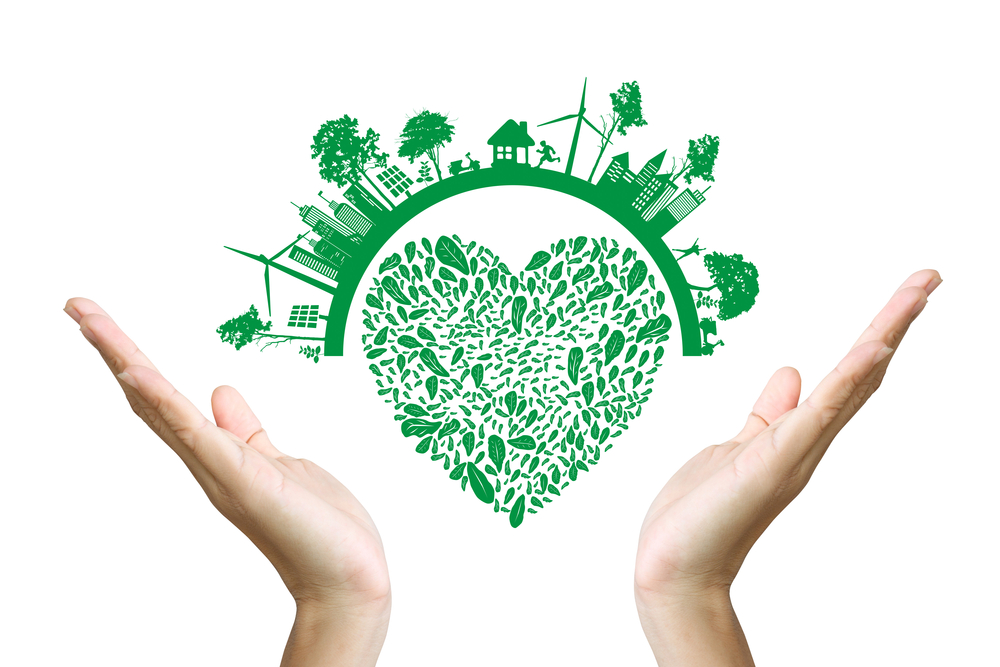

Человек как биосоциальный вид
Социальная экология - объединение науных отраслей, изучающих связь общественных структур с природой и социальной средой их окружения.
Экологическое мышление - понимание динамической целостности преобразования среды в интересах человека и сохранения ествественных систем природы (общества).
